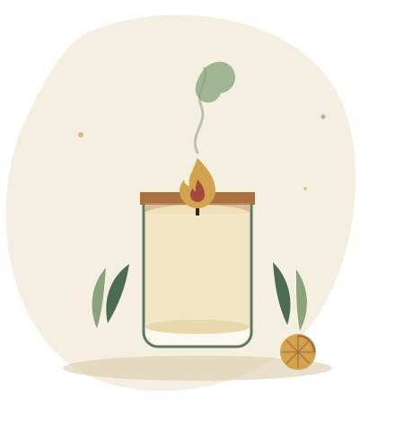

โครงงานภูมิปัญญาไทยเพื่อสุขภาพ
เทียนหอมไล่ยุง
จากสมุนไพรธรรมชาติ
ผลิตภัณฑ์ไล่ยุงที่ทำจากสมุนไพรใกล้ตัว เช่น ตะไคร้หอม การบูร และเปลือกส้ม แทนที่สารเคมีสังเคราะห์ ปลอดภัยต่อผู้ใช้ ทำเองได้ที่บ้าน และเป็นมิตรต่อสิ่งแวดล้อม

แนวคิดโครงงาน
ทำไมต้องเทียนหอมไล่ยุงจากสมุนไพร
เทียนไล่ยุงที่ขายทั่วไปมักผสมสารเคมีที่ก่อให้เกิดกลิ่นฉุนและควันระคายเคือง โครงงานนี้จึงพัฒนาสูตรจากสมุนไพรที่หาได้ในท้องถิ่น เพื่อเป็นทางเลือกที่ปลอดภัยกว่าและทำได้ด้วยตนเอง
สมุนไพรแท้จากธรรมชาติ
ใช้ตะไคร้หอม การบูร และสมุนไพรกลิ่นฉุนที่มีฤทธิ์ไล่แมลงตามธรรมชาติ ไม่พึ่งสารเคมีสังเคราะห์
ปลอดภัยต่อสุขภาพ
ลดการสัมผัสสารเคมีจากเทียนไล่ยุงสำเร็จรูป เหมาะกับการใช้งานในบ้านเมื่อปฏิบัติตามคำแนะนำอย่างถูกวิธี
ทำได้ด้วยตนเอง
ขั้นตอนไม่ซับซ้อน ใช้อุปกรณ์ที่มีอยู่ในครัวเรือน ทำเสร็จได้ภายในเวลาไม่กี่ชั่วโมง
ประหยัดและต่อยอดได้
ต้นทุนวัตถุดิบต่ำกว่าเทียนไล่ยุงสำเร็จรูป และสามารถพัฒนาต่อยอดเป็นผลิตภัณฑ์จำหน่ายได้
ภาพรวมขั้นตอน
ทำเทียนหอมไล่ยุงสมุนไพร ใน 5 ขั้นตอนหลัก
เตรียมอุปกรณ์
หลอมเนื้อเทียน
เตรียมสมุนไพร
เทลงแม่พิมพ์
แกะและตกแต่ง
วัตถุดิบหลัก
สมุนไพรที่ใช้ในสูตร
ตะไคร้หอม
กลิ่นฉุนที่ยุงไม่ชอบ เป็นสมุนไพรหลักของสูตร
การบูร
ช่วยเสริมฤทธิ์ไล่แมลงและให้กลิ่นหอมเย็น
กานพลู
น้ำมันหอมระเหยที่มีฤทธิ์ไล่ยุงตามธรรมชาติ
เปลือกส้ม / ผิวมะกรูด
เพิ่มกลิ่นหอมสดชื่นให้เทียนหลังจุด
พร้อมลงมือทำเทียนหอมไล่ยุงของคุณเองหรือยัง
ศึกษาส่วนผสม ขั้นตอน และข้อควรระวังให้ครบก่อนเริ่มลงมือทำจริง เพื่อความปลอดภัยและผลลัพธ์ที่ดีที่สุด